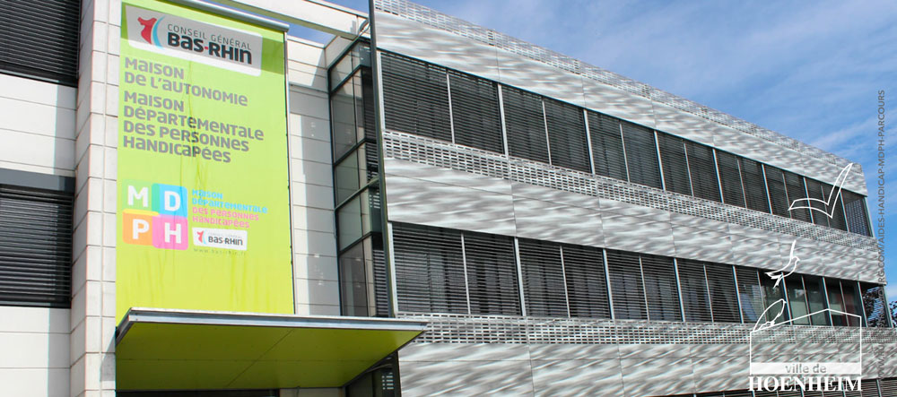

Dans la situation exceptionnelle que nous vivons actuellement, la Maison de l’Autonomie du Bas-Rhin et la MDPH tiennent à maintenir un service continu de qualité aux personnes en perte d’autonomie, à leur famille et à leurs aidants.
Une mesure nationale de la Satisfaction des Usagers de la MDPH est en cours, avec l’appui de la Caisse Nationale de Solidarité pour l’Autonomie (CNSA) :
L’objectif est d’évaluer la qualité du service rendu à l’usager et en tirer les enseignements comme points d’amélioration de nos services.
Merci de votre participation.
La MDPH est en service continu.
Pour répondre au mieux aux besoins de nos publics tout en respectant les consignes sanitaires du Gouvernement, voici les horaires adaptés :
Horaires accueil physique MDA/MDPH
au guichet au 6A, rue du verdon à Strasbourg
les mardis et jeudis de 13h30 à 17h
Horaires accueil téléphonique MDA/MDPH
au 0800 747 900 (appel non surtaxé)
– le lundi de 13h30 à 16h30
– le mardi, mercredi, jeudi de 9h à 12h et de 13h30 à 16h30
– le vendredi de 9h à 12h
Nos agents restent joignables par mail : accueil.mdph@bas-rhin.fr.
Les dossiers de demande peuvent être déposés ou envoyés à notre adresse postale, leur prise en charge reste habituelle.
Vous avez une question concernant à la perte d’autonomie, n’hésitez pas à vous rendre sur les différents sites d’information suivants ou à les conseiller aux usagers :
www.bas-rhin.fr
www.pour-les-personnes-agees.gouv.fr
www.monparcourshandicap.gouv.fr
www.gouvernement.fr/info-coronavirus
(attestations, droits, consignes générales et spécifiques handicap)
Prenez soin de vous.